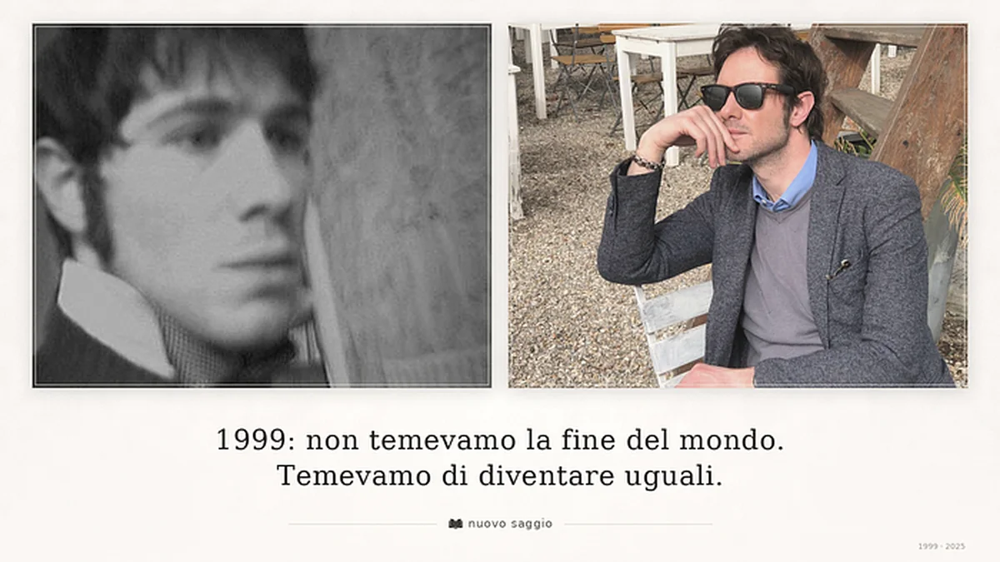

Abstract
Dal Millennium Bug alla paura contemporanea dell’omologazione: un saggio sulla soglia tra 1999 e 2026, sulla tecnologia diventata ambiente, sulla libertà ridotta a consumo e sulla necessità di difendere ciò che nell’umano resta inassimilabile.
La vigilia del 1999
L’aria, quest’anno, ha lo stesso sapore di allora: attesa.
Ma nel 1999 l’attesa era un animale giovane, febbrile, quasi felice, come se il futuro dovesse presentarsi in carne e ossa, con un volto pulito e una promessa leggibile. Oggi l’attesa non corre: pesa. È una materia scura che preme sulle tempie.
Nel 1999 aspettavamo il 2000 come un treno di luce.
Ora aspettiamo il 2026 come si veglia una stanza in cui l’aria si è fatta pesante. Il conto alla rovescia è lo stesso: cambia ciò che ci abita dentro mentre contiamo.
Avevo diciannove anni nel 1999 e il millennio “finiva”, o così ci avevano insegnato a sentirlo: una grande soglia, una porta monumentale, una liturgia laica. Il nemico aveva un nome tecnico, quasi consolante: Millennium Bug. Un insetto nei circuiti. Un guasto esterno.
La paura era collettiva e persino scenografica: bastava immaginare la corrente che salta, i bancomat muti, gli aerei che “impazziscono”. E in fondo c’era una superstizione infantile: che tutto si risolvesse in un gesto. Staccare la spina. Riattaccarla. E ricominciare.
La speranza, allora, non era un concetto: era una corrente.
Scorreva verso Internet come verso un oceano senza dogane, dove le isole degli uomini avrebbero finalmente smesso di odiarsi per ignoranza. Scorreva verso lo spazio, nuova frontiera: l’idea che l’umano non fosse costretto alla sua miseria quotidiana. Era la speranza di aggiungere: più connessione, più lavoro, più futuro. Anche più rumore, sì, ma non lo sapevamo.
Il mio futuro personale era una pagina bianca. Non avevo ancora imparato che le pagine bianche fanno paura. Vi leggevo una domanda sola: chi sarò? Era l’ingenuità assoluta di chi crede che il mondo, in fondo, voglia il tuo bene se tu lo vuoi abbastanza.
Il bug diventato abitudine
Oggi il bug non ha più la forma dell’incidente. Ha la forma dell’abitudine.
Non è un errore nel software: è l’ordine stesso del discorso. È il modo in cui abbiamo chiamato “sviluppo” ciò che somiglia a una colonizzazione continua del vivente; è la velocità scambiata per destino; è l’estrazione spacciata per normalità; è l’omologazione travestita da libertà.
Nel 1999 temevamo che i sistemi crollassero.
Nel 2025 temiamo che i sistemi funzionino troppo bene, e che proprio per questo diventino incontestabili, inevitabili, religiosi.
La nuova paura non è il blackout: è la luce permanente, la sorveglianza gentile, il mondo ridotto a statistiche e profili, a un grande mercato dell’anima dove perfino la ribellione viene trasformata in merce riconoscibile.
La speranza, di conseguenza, non è più un fiume che promette oceani.
È un argine costruito mentre l’acqua sale. È un gesto sottrattivo: togliere, ridurre, disertare. Non conquistare nuovi mondi, ma impedire che questo diventi invivibile. Non sognare l’espansione, ma difendere una misura. Salvare una città respirabile, un lavoro che non divori, una relazione che non sia macinata dal cinismo, un pezzo di silenzio non colonizzato dal rumore.
Il mio futuro personale non è più una pagina bianca.
È un documento già pieno di clausole, rate, condizioni al contorno. Scrivere “chi sarò” sembra un lusso barocco. La domanda che morde — la domanda indecente — è: dove saremo, e a quale prezzo ci resteremo?
La connessione come aria cattiva
La notte del 1999, la connessione era un miracolo appena nato.
Il modem cantava la sua strofa di grilli metallici per aprire un varco nel muro. C’era ancora spazio: spazio mentale, spazio morale, spazio di mondo. Si poteva credere che la tecnologia fosse neutra, che fosse solo uno strumento.
Oggi la connessione è l’aria che respiriamo. E spesso è aria cattiva.
Siamo iperconnessi, eppure confinati in una solitudine che ha le dimensioni esatte del globo.
Ci avevano promesso un pianeta unito: abbiamo ottenuto stanze chiuse che ritrasmettono senza sosta la stessa verità, la stessa ferita, la stessa rabbia. La globalizzazione che doveva avvicinare ha imparato a dividere senza rumore: non ci mostra il mondo, ci mostra uno specchio così ben fatto che finiamo per credere che il mondo ci somigli.
La mia angoscia di diciannovenne era metafisica: senso, amore, direzione.
L’angoscia dell’uomo che sono oggi è organica: entra nello stomaco, nella pelle, nel respiro. È un dato che, a guardarlo troppo a lungo, diventa vertigine. È la sensazione che il confine tra “privato” e “storico” sia saltato: che ogni gesto quotidiano sia già politico, e che ogni rinuncia sia già una forma di battaglia.
E allora il nemico non è più fuori, nel glitch di una macchina.
È lo sguardo nello specchio: stile di vita, complicità, comodità scambiata per diritto.
La soglia che ritorna
Che cosa è rimasto in comune tra queste due vigilie?
Tra quel ragazzo del 1999 e quest’uomo del 2025 che porta lo stesso nome ma forse, incontrandolo per strada, non gli concederebbe fiducia?
È rimasta la soglia.
L’umano ha bisogno di soglie: porte rituali dove depositare colpe e speranze, come se il tempo fosse un tribunale che assolve a data fissa. “Millennio”, “secolo”, “transizione”, “singolarità”: nomi nuovi per lo stesso rito antico, scaricare su una data ciò che non abbiamo saputo affrontare nella vita.
Nel 1999 scaricammo sul Bug la paura del controllo perduto.
Nel 2025 scarichiamo sull’emergenza climatica e sull’intelligenza artificiale una paura più feroce: che il guasto siamo noi. Non perché “cattivi”, ma perché educati all’obbedienza del consumo; addestrati a confondere desiderio e bisogno; convinti che la libertà coincida con la scelta tra due scaffali.
La differenza, però, è brutale.
Dopo il 1º gennaio 2000 il mondo non finì. E ci sentimmo, insieme, sciocchi e sollevati.
Dopo il 1º gennaio 2026 il mondo non “finirà” in un colpo solo: continuerà a finire a pezzi, a rate, come una casa che perde fondamenta mentre ci abiti ancora dentro. E non ci sarà un titolo capace di annunciare “falso allarme”.
Eppure, qui sta il punto più difficile da dire senza retorica: io voglio salvare una cosa del ragazzo del 1999. Non la sua ingenuità, ma la sua capacità di festeggiare nell’incertezza.
Di alzare un bicchiere non per dimenticare, ma per dichiarare presenza: “ci sono”. Di ballare non per negare, ma per resistere alla tentazione del nichilismo.
Il mio auspicio per il 2026 e per gli anni nuovi non è “andrà tutto bene”. Sarebbe un insulto alla realtà.
Il mio auspicio è più severo, e per questo più sperabile: che nasca una generazione trasversale — non anagrafica, ma morale — capace di disobbedire al ricatto dell’inevitabile. Gente che non confonda la modernità con l’obbedienza, la tecnologia con la resa, l’efficienza con il senso. Che sappia riconoscere il nuovo potere quando si traveste da servizio, quando ti chiama “utente” per non chiamarti “suddito”.
Che il 2026 ci porti meno opinioni e più linguaggio. Meno identità usate come muri, più comunità come gesto continuo. Che ci porti una sobrietà non triste, capace di restituire valore alle cose piccole: il limite, la cura, la fedeltà a un luogo, a un corpo, a una promessa.

Difendere l’inassimilabile
Brindo al 2026 così: non aspettando un treno di luce, ma scegliendo, una per una, le fiamme da spegnere. E custodendo, nel buio che forse verrà, una brace concreta: la possibilità ostinata di diventare umani migliori senza chiedere permesso al mercato.
Quella brace ha un nome: difendere l’inassimilabile.
Difendere ciò che non si lascia ridurre a consumo, a identità pronta, a opinione pronta, a vita pronta. Difendere l’imperfetto: la contraddizione, la lentezza, la vergogna che ci salva dal narcisismo, la pietà che ci salva dalla crudeltà.
E se dobbiamo attraversare il buio, attraversiamolo con una luce che non si compra: povera, ostinata, non negoziabile.
La luce di chi, mentre tutto spinge a renderci intercambiabili, decide di non finire uguale.
Studi e riferimenti
Questo saggio dialoga soprattutto con alcune linee del pensiero contemporaneo: la mutazione antropologica e il consumo in Pier Paolo Pasolini; la psicopolitica, la trasparenza e la stanchezza dell’individuo in Byung-Chul Han; il capitalismo della sorveglianza in Shoshana Zuboff; la crisi dell’uomo davanti alla tecnica in Günther Anders; il nichilismo e la genealogia dei valori in Friedrich Nietzsche.
I riferimenti non sono usati come apparato accademico, ma come cornice di lettura per una diagnosi civile sul passaggio dalla paura del guasto alla paura dell’omologazione.